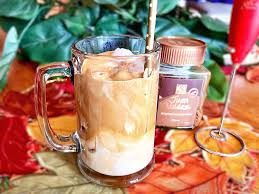

Reverse Dalgona Ice Coffee

Description
I call this reverse dalgona iced coffee because the whipped coffee is made in the same glass it is served in. Talk about easy clean-up!
Ingredients
- 1 tablespoon instant coffee granules
- 1 tablespoon white sugar
- 2 tablespoons water
- half cup ice
- half cup milk
Steps
- Place coffee, sugar, and water, in that order, in a tall glass. Using a hand-held milk frother, froth mixture until light and fluffy, 1 to 3 minutes.
- Add ice cubes to the glass, then pour milk over top.
Home